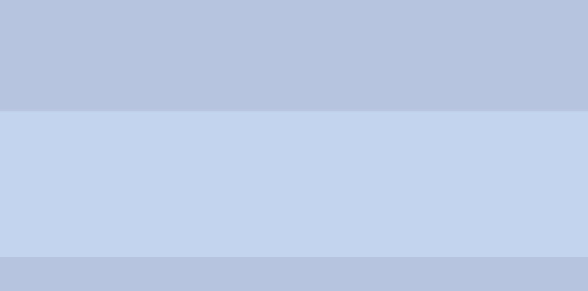
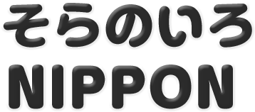

鶏と煮干しの黄金比が生む、珠玉の煮干しらーめん
濃厚魚介の名店「玉」による煮干しらーめん専門店。鶏の旨味が詰まった濃厚スープに数種の煮干しを合わせて作る至福の一杯は新たな東京名物です。
※期間限定メニューは、2025年10月以降食材がなくなり次第終了とさせていただきます。
行列の絶えない東京を
代表する塩ラーメンの名店
北海道産小麦の風味豊かな麺と、
厳選食材からコクと旨味を引き出したスープは絶品。
※期間限定メニューは、2025年10月以降食材がなくなり次第終了とさせていただきます。

本店がミシュランガイドに
掲載された実力店
日本最大級の地鶏『天草大王』を使った
醤油らーめんの他、貝出汁塩ラーメン、
キノコベジソバも人気。近年の食の多様化に対応した、
グルテンフリーやビーガンのメニューもご用意。
※期間限定メニューは、2025年10月以降食材がなくなり次第終了とさせていただきます。